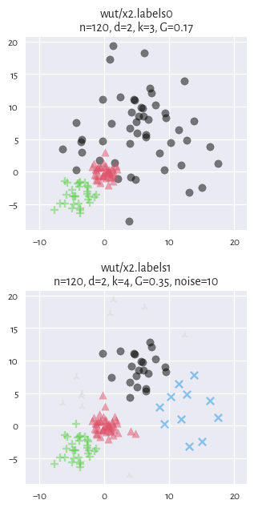

A Framework for Benchmarking Clustering Algorithms¶
There is no, nor will there ever be, one best clustering algorithm. Still, we would like to be able to separate the wheat from the chaff: to pinpoint grouping methods that are well-performing on certain task types and filter out the systematically disappointing ones.
A common approach to clustering algorithm evaluation is to run the methods on a variety of benchmark datasets and compare their outputs to the reference, ground truth groupings that are provided by experts.
However, it is not rare for research papers/graduate theses to consider only a small number of datasets. We regularly come across the same 5–10 test problems from the UCI database. This is obviously too few to make any evaluation rigorous enough and may lead to overfitting [53, 54, 65].
Some algorithm authors propose their own datasets, but do not test their methods against other benchmark suites. This might lead to biased conclusions.
Sometimes, those who share their data (thanks!) might not make the interaction with their batteries particularly smooth (different file formats, different ways to access the files, etc., even across a single repository).
Furthermore, existing repositories do not reflect the idea that there might be many equally valid/plausible/useful partitions of the same dataset; see [10, 58] for discussion.
On the other hand, some well-agreed-upon approaches for testing the quality of algorithms in other machine learning domains (e.g., classification and regression problems included in the said UCI [12]; but also: optimisation [34, 60]) have been developed a long time ago.
This is why:
Important
This project aims to:
propose a consistent methodology for evaluating partitional clustering algorithms,
aggregate, polish, and standardise the existing clustering benchmark batteries (collections) referred to across the machine learning and data mining literature,
introduce new datasets of different dimensionalities, sizes, and cluster types.
Note
The proposed approach at a glance:
Datasets of different origins, difficulty, dimensionality, and cluster structure (including clusters of imbalanced sizes and different shapes) are provided.
Each clustering algorithm under scrutiny should be run so as to split the datasets into a desired number of subsets (e.g., to find all 2-, 3-, 4-… -clusterings).
Each dataset is equipped with at least one ground truth partition provided by experts. Clustering is an unsupervised data mining problem, so there can be many equally valid partitions.
External cluster validity scores are computed to quantify the similarity of the outputs to all the possible reference sets.
Noise points can be included in the dataset to make the clustering harder. However, the way they are classified may be ignored when computing the final similarity score.
The best score is reported (has or has not the algorithm reproduced at least one of the ground-truth partitions well?)
See the subsequent sections for more details.
Author/Editor/Maintainer: Marek Gagolewski
How to Cite: Gagolewski M., A framework for benchmarking clustering algorithms, SoftwareX 20, 2022, 101270, https://clustering-benchmarks.gagolewski.com, DOI: 10.1016/j.softx.2022.101270.
Data are provided solely for research purposes, unless stated otherwise. If you use them in your publications, please cite the literature references mentioned in the description files corresponding to each dataset.